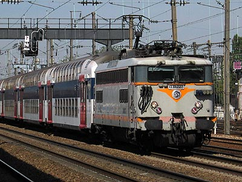
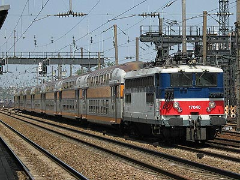
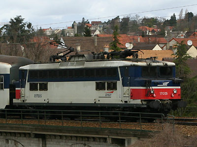
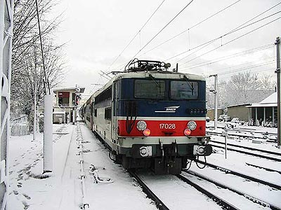
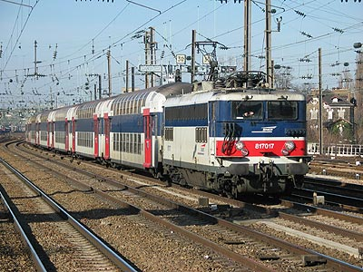
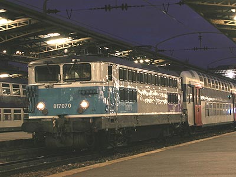
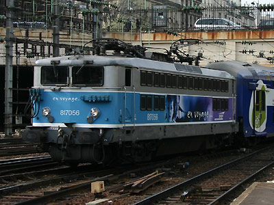
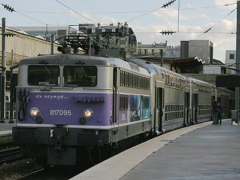

La BB 17000 version 
T.Stachnik et son équipe ont réalisé un pack de BB 17000.
BB 17000
Suite à l'importante série des BB 16500, Alsthom avait entièrement repensé son principe de locomotive BB à bogies courts pour y intégrer des équipements électriques bicourants. Des BB 25500 qui étaient le fruit de ces études, il était prévu de décliner une version monocourant continu (BB 8500) et une version monocourant monophasé en retirant l'équipement superflu et en le remplaçant par un lest. Les 17000 sont ainsi des 25500 dont on a retiré le banc rhéostatique et la commande par contacteurs. De conception plus moderne que les 16500, les 17000 se distinguent par une puissance accrue. Les caractéristiques mécaniques sont semblables à leurs ainées. Bogies monomoteurs à empattement court, boites d'essieux internes et réducteur en porte-à-faux doté de deux rapports voyageurs (150 km/h) et marchandises (90 km/h). La vitesse maximum fut par la suite ramenée à 140 km/h. A partir de la 17038, le chassis est renforcé et les traverses sont aptes à recevoir l'attelage automatique. La caisse évolue encore avec l'apparition d'une trappe d'accès en toiture sur les dernières machines.
Les 17000 ont été déclinées en version bifréquence : les BB 20200.
Leur commande visait à équiper la ligne Paris-Le Havre en cours d'électrification. Mais elles ont parcouru Paris-Lille à leurs débuts et elles étaient, dès leur origine, aptes à la réversibilité avec des rames régionales ou de banlieue. En outre elles peuvent être utilisées en UM avec une 25500 ou une autre 17000. Les UM hybrides n'ont cependant été que peu voire pas du tout utilisées. Les 17000 ont également passé une partie de leur carrière à Lens où elles assuraient un panel d'activité plus large.
L'électrification de la Grande Ceinture parisienne les prive de leurs prestations Fret qui sont reprises par des 25500 bicourantes sans coupure entre Nord et Sud. De plus, l'arrivée des BB 15000 sur les Grandes Lignes à partir de 1971 et des VB2N à la fin des années 70 renforce leur utilisation en banlieue Est, Nord et St Lazare. L'effectif se porte alors à 105 exemplaires construits de 1965 à 1968 et restera stable car les besoins pour ce type de machine sont déjà largement couverts par les BB 16500 et pleinement satisfaits. Cela explique qu'il n'y ait pas de 17000 à grandes cabines contrairement à leurs cousines dont la construction s'est étalée jusqu'en 1976.
En 2004, l'utilisation des 17000 était purement dédiée à l'activité 8 (Banlieue Ile de France). Toutes les machines (hormis les 17029 et 17056) revêtaient donc la livrée IdF et commençaient à recevoir la nouvelle livrée "En Voyage". Elles sont toutes équipées de l'EAS et d'écrans embarqués. Il était rare, mais pas impossible, d'en croiser sur un train GL ou Fret. Il faut aussi rajouter les circulations TER avec les VO2N pour la Normandie et la Picardie.
A noter, c'est un fait assez rare pour être souligné, qu'aucune machine ne manquait à l'appel jusqu'au début de l'amortissement de la série. La question de leur remplacement fut maintes fois posée. La déclinaison de BB 27000 en locomotives dédiées à la banlieue fut avancée puis abandonnée. Ceci a justifié l'agrandissement des cabines de plusieurs engins selon la formule déjà adoptée sur les BB 8700 Maurienne et des BB 8500 Bourgogne.
Finalement, les BB 27300 furent commandées et les premières BB 17000 sont parties à la retraite en décembre 2007. La série se portait tout de même encore bien puisque 84 machines restaient à l'effectif en 2012. En raison de l'important porte-à-faux des RIB et des BB 27300 les rendant incompatibles, les BB 17000 restaient indispensables à St Lazare. Elles conservaient aussi les Transilien Nord en VB2N et les relations régionales en VO2N.
C'est la fiabilisation des Z 50000 et leur arrivée en masse qui désormais poussent RIB et BB 17000 à la retraite. Sur le réseau Nord, les rames VB2N sont retirées et envoyées à Montparnasse où elles sont attelées à des BB 7600.
Quelques données techniques
Constructeur : Alsthom
Tension d'alimentation : 25 kV monophasé 50 Hz
Chaîne de traction : Graduateur circulaire 25 kV, redresseurs à diodes
Motorisation : 1 moteur TAB 660 B 1500 V par bogie
Puissance totale : 2940 kW
Longueur : 14,700 m
Masse : 79t
Pantographes : 2 x AM 18 V
Machine remarquable de la série
La 17005, accidentée peu après sa sortie d'usine, fut reconstruite sur un châssis de BB 25500 longue. Des capôts spéciaux ont été confectionnés pour rattraper la différence de longueur avec la caisse.
Pour plus d'info :
La fiche BB 17000 sur Wikipedia
Fiche technique des BB 17000 de Florent Brisou
L'inventaire des BB 17000 sur Trains du Sud-Ouest

La BB 17056 à Clichy Levallois (25/09/2003)

La BB 17040 avec une VO2N à Clichy Levallois (07/07/2003)

La BB 17005 et son châssis allongé vue à Cormeilles-en-Parisis (01/04/2006)

La BB 17028 affronte les rigueurs de l'hiver. Conflans Ste Honorine (04/01/2003)

La BB 17017 passe à Clichy Levallois (24/01/2003)

La BB 17070, livrée inachevée, à Paris Est (18/09/2004)

La BB 17056 repeinte et une VB2N Transilien à Paris St Lazare (11/04/2006)

La BB 17095 et une VO2N Picarde à Paris Nord (12/09/2004)
La BB 17000 version 
T.Stachnik et son équipe ont réalisé un pack de BB 17000.